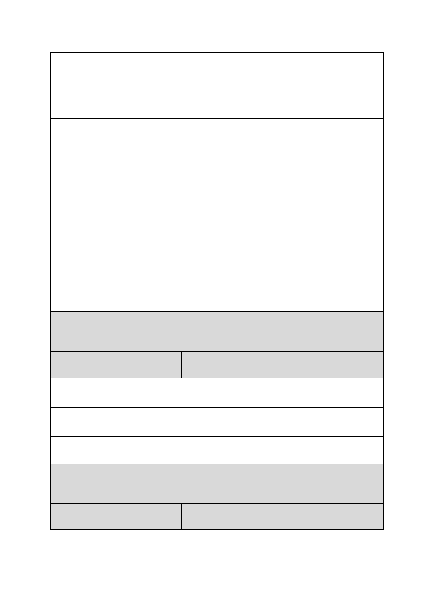

臺北市都市計畫委員會 公民或團體陳情意見綜理表
「變更臺北市信義區逸仙段二小段 33 地號等 21 筆土地（原臺北機廠）
案
名
工業區為創意文化專用區、特定專用區、道路及綠地用地主要計畫案」
及「擬定臺北市信義區逸仙段二小段 33 地號等 21 筆土地（原臺北機
廠）創意文化專用區、特定專用區、道路及綠地用地細部計畫暨劃定
都市更新地區計畫案」
休憩及通行使用。
五、有關質疑本計畫未依「都市計畫細部計畫審議原則」第 11 點規
定：「主要計畫變更土地使用分區達 1 公頃以上地區，應劃設不低於
該等地區總面積 10％之公園、綠地、廣場、體育場所、兒童遊樂場
用地」辦理乙節，細部計畫已調整將文資核心建築群劃設為博物館用
地及公園用地，加上市民高架道路以南劃設之綠地用地，總計公園綠
地面積劃設約 1.85 公頃，占全計畫區約 10.84％，符合前開審議原則
規定。
六、有關質疑本計畫未載明都市更新重建、整建及維護區段詳細圖
說、辦理聽證會等節，查重建、整建及維護區段之詳細設計圖說及聽
證會均屬都市更新事業計畫之法定程序，本計畫目前係進行都市計畫
變更審議程序，尚毋須辦理前開事宜。另為避免各園區建築量體形成
對文化資產之圍鎖封閉效果及環境衝擊，本計畫土地產權單純，98.76
％為臺鐵局經管之國有土地，並無透過都市更新促進土地整合之需
求，故細部計畫已取消劃定都市更新地區。
委員
會議 內容同編號 1。
決議
編
號
36 陳情人
林○潔
陳情 對於北市府預定將組立工場改為「美術綰」、全區作高度開發表達反
理由 對立場。
建議 不應將不適用的美術館套用在組立工場上，應以台北機廠自身的功用
辦法 做保存與活用。
市府 同編號 1 市府回應內容。
回應
委員
會議 內容同編號 1。
決議
編
號
37 陳情人
王○懿
第 46 頁/共 154 頁